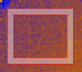
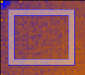

Masking And Grouping¶
The Draw tab is for grouping or masking detectors.
The toolbar on this tab consists of the same tools as the top row of tools in the Pick tab. Their functions and behaviours are also the same but the shapes are used for masking and grouping instead of displaying the data.
Use these radio-buttons to switch between masking and grouping functions.
The shapes ready for masking have red border

The shapes ready for grouping have blue border

Masking¶
In the masking mode operations can either be applied to the view only or to the underlying workspace.
When the “Apply to View” button is clicked the detectors covered by the shapes are greyed out indicating that they are masked.
The purpose of applying to view only is to make creation of masking
workspaces/files easier. You can create a mask, apply it to view, save
it in a workspace or a file but then clear the view
( button) and create another mask without closing
the Instrument View or need to reload the data. The masking operations
are available from the “Apply and Save” menu.
button) and create another mask without closing
the Instrument View or need to reload the data. The masking operations
are available from the “Apply and Save” menu.
If masking is applied to the data (by clicking ) it cannot be undone.